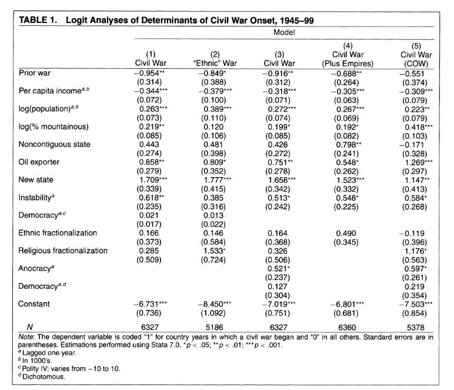
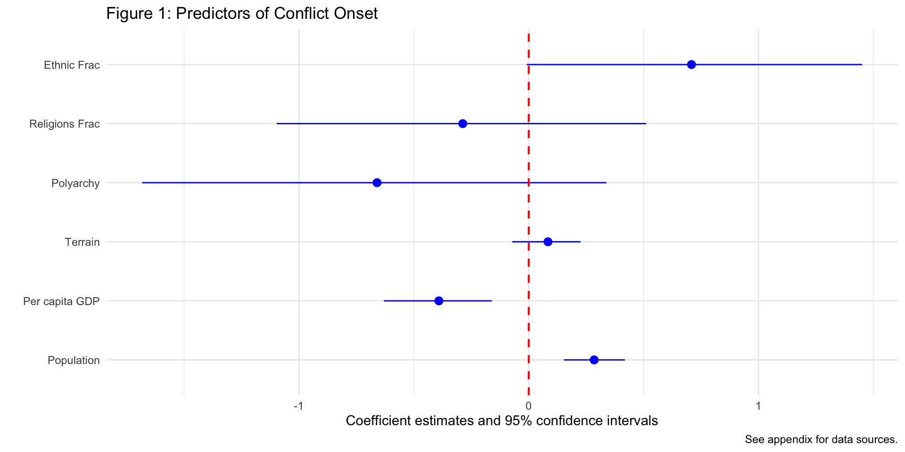
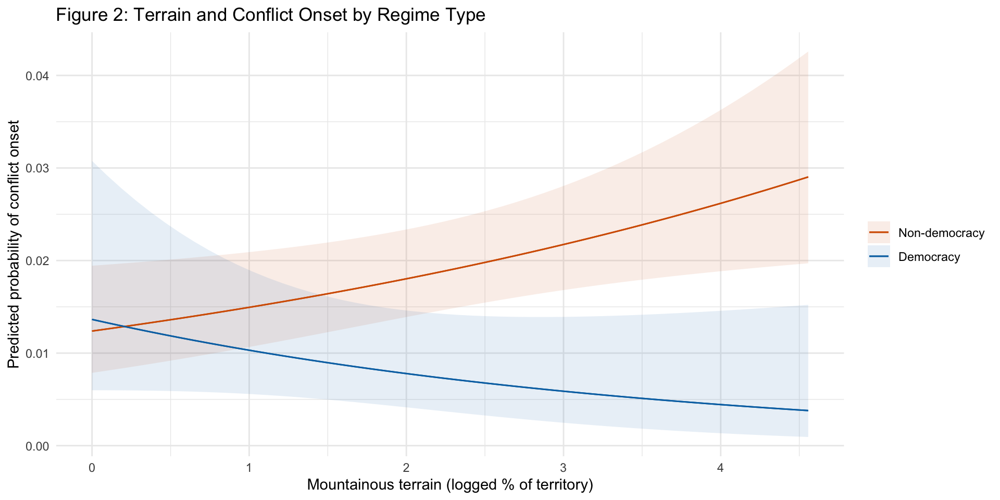

How to Interpret and Create
November 17, 2026
Download the data using the peacesciencer package if you haven’t already…
Example, including multiple predictors associated with conflict:
# A tibble: 7 × 5
term estimate std.error statistic p.value
<chr> <dbl> <dbl> <dbl> <dbl>
1 (Intercept) -5.38 1.41 -3.82 0.000136
2 ethfrac 0.708 0.372 1.91 0.0567
3 relfrac -0.287 0.409 -0.701 0.483
4 v2x_polyarchy -0.660 0.514 -1.29 0.199
5 rugged 0.0836 0.0756 1.10 0.269
6 wbgdppc2011est -0.391 0.120 -3.26 0.00112
7 wbpopest 0.285 0.0677 4.20 0.0000264# load the
library(marginaleffects)
# seledct some countries for a given year
selected_countries <- conflict_df |>
filter(
gw_name %in% c("United States of America", "Venezuela", "Rwanda"),
year == 1999)
# calculate margins for the subset
marg_effects <- predictions(conflict_model, newdata = selected_countries)
# tidy the results
tidy(marg_effects) |>
select(estimate, p.value, conf.low, conf.high, gw_name)# A tibble: 3 × 5
estimate p.value conf.low conf.high gw_name
<dbl> <dbl> <dbl> <dbl> <chr>
1 0.0115 1.65e-28 0.00526 0.0249 United States of America
2 0.0136 5.77e-80 0.00878 0.0210 Venezuela
3 0.0331 3.00e-38 0.0201 0.0540 Rwanda 
modelsummarymodelsummary packageethnicity <- glm(ucdponset ~ ethfrac + relfrac + wbgdppc2011est + wbpopest, # store each model in an object
data = conflict_df,
family = "binomial")
democracy <- glm(ucdponset ~ v2x_polyarchy + wbgdppc2011est + wbpopest,
data = conflict_df,
family = "binomial")
terrain <- glm(ucdponset ~ rugged + wbgdppc2011est + wbpopest ,
data = conflict_df,
family = "binomial")
full_model <- glm(ucdponset ~ ethfrac + relfrac + v2x_polyarchy + rugged +
wbgdppc2011est + wbpopest,
data = conflict_df,
family = "binomial")models <- list("Ethnicity" = ethnicity, # store list of models in an object
"Democracy" = democracy,
"Terrain" = terrain,
"Full Model" = full_model)
coef_map <- c("ethfrac" = "Ethnic Frac", # map coefficients
"relfrac" = "Religions Frac", #(change names and order)
"v2x_polyarchy" = "Polyarchy",
"rugged" = "Terrain",
"wbgdppc2011est" = "Per capita GDP",
"wbpopest" = "Population",
"(Intercept)" = "Intercept")
caption = "Table 1: Predictors of Conflict Onset" # store caption
reference = "See appendix for data sources." # store reference notesNote that you also need the gt package to display the table in this way…
library(modelsummary)
library(gt)
modelsummary(models, # display the table
stars = TRUE, # include stars for significance
gof_map = c("nobs"), # goodness of fit stats to include
coef_map = coef_map, # coefficient mapping
title = caption, # title
notes = reference, # source note
output = "gt") # render with gt| Ethnicity | Democracy | Terrain | Full Model | |
|---|---|---|---|---|
| Ethnic Frac | 0.733* | 0.708+ | ||
| (0.365) | (0.372) | |||
| Religions Frac | -0.429 | -0.287 | ||
| (0.409) | (0.409) | |||
| Polyarchy | -0.806* | -0.660 | ||
| (0.391) | (0.514) | |||
| Terrain | 0.035 | 0.084 | ||
| (0.075) | (0.076) | |||
| Per capita GDP | -0.485*** | -0.274*** | -0.553*** | -0.391** |
| (0.104) | (0.059) | (0.092) | (0.120) | |
| Population | 0.278*** | 0.300*** | 0.296*** | 0.285*** |
| (0.067) | (0.051) | (0.050) | (0.068) | |
| Intercept | -4.571*** | -6.185*** | -4.166*** | -5.380*** |
| (1.323) | (0.968) | (1.140) | (1.410) | |
| Num.Obs. | 6364 | 6955 | 6840 | 6129 |
| + p < 0.1, * p < 0.05, ** p < 0.01, *** p < 0.001 | ||||
| See appendix for data sources. | ||||
modelsummaryexponentiate = TRUEThis don’t look too good…
| (1) | |
|---|---|
| + p < 0.1, * p < 0.05, ** p < 0.01, *** p < 0.001 | |
| See appendix for data sources. | |
| Ethnic Frac | 0.708+ |
| (0.372) | |
| Religions Frac | -0.287 |
| (0.409) | |
| Polyarchy | -0.660 |
| (0.514) | |
| Terrain | 0.084 |
| (0.076) | |
| Per capita GDP | -0.391** |
| (0.120) | |
| Population | 0.285*** |
| (0.068) | |
| Intercept | -5.380*** |
| (1.410) | |
| Num.Obs. | 6129 |
So we can use ggplot to make a coefficient plot instead…
library(ggplot2)
modelplot(conflict_model,
coef_map = rev(coef_map), # rev() reverses list order
coef_omit = "Intercept",
color = "blue") + # use plus to add customizations like any ggplot object
geom_vline(xintercept = 0, color = "red", linetype = "dashed", linewidth = .75) + # red 0 line
labs(
title = "Figure 1: Predictors of Conflict Onset",
caption = "See appendix for data sources."
) 
modelplot to create a coefficient plot of it* between two variables in the model formulademocracy * newlmtnest is shorthand for democracy + newlmtnest + democracy:newlmtnestdemocracy:newlmtnest is the interaction term (the product of the two variables)* does this for you)# create a binary democracy measure
conflict_df <- conflict_df |>
mutate(democracy = ifelse(v2x_polyarchy > 0.5, 1, 0))
# interact democracy with mountainous terrain
terrain_model <- glm(ucdponset ~ democracy * newlmtnest + wbgdppc2011est +
wbpopest + ethfrac + relfrac,
data = conflict_df,
family = "binomial")
tidy(terrain_model)# A tibble: 8 × 5
term estimate std.error statistic p.value
<chr> <dbl> <dbl> <dbl> <dbl>
1 (Intercept) -6.08 1.41 -4.30 0.0000171
2 democracy 0.0978 0.492 0.199 0.843
3 newlmtnest 0.191 0.0772 2.47 0.0135
4 wbgdppc2011est -0.297 0.118 -2.51 0.0120
5 wbpopest 0.254 0.0712 3.56 0.000367
6 ethfrac 0.682 0.378 1.81 0.0708
7 relfrac -0.206 0.403 -0.510 0.610
8 democracy:newlmtnest -0.474 0.220 -2.16 0.0311 \[\text{logit}(p) = \beta_0 + \beta_1\text{Dem} + \beta_2\text{Terrain} + \beta_3(\text{Dem} \times \text{Terrain}) + \text{controls}\]
marginaleffectslibrary(marginaleffects)
terrain_slopes <- slopes(terrain_model,
variables = "newlmtnest", # effect of terrain...
by = "democracy", # ...separately by regime type
type = "link") |> # on the log-odds scale
tidy() |>
mutate(odds.ratio = exp(estimate),
or.low = exp(conf.low),
or.high = exp(conf.high))
terrain_slopes |>
select(democracy, estimate, std.error, odds.ratio, or.low, or.high)# A tibble: 2 × 6
democracy estimate std.error odds.ratio or.low or.high
<dbl> <dbl> <dbl> <dbl> <dbl> <dbl>
1 0 0.191 0.0772 1.21 1.04 1.41
2 1 -0.283 0.207 0.754 0.502 1.13plot_predictions(terrain_model,
condition = list("newlmtnest", democracy = c(0, 1))) +
scale_color_manual(values = c("#D55E00", "#0072B2"),
labels = c("Non-democracy", "Democracy"),
aesthetics = c("color", "fill")) +
labs(x = "Mountainous terrain (logged % of territory)",
y = "Predicted probability of conflict onset",
color = NULL, fill = NULL,
title = "Figure 2: Terrain and Conflict Onset by Regime Type") +
theme_minimal()
democracy * newlmtnest model side by side in a modelsummary tablev2x_polyarchy * wbgdppc2011estslopes() with newdata = datagrid(v2x_polyarchy = c(0.1, 0.5, 0.9)) to get the effect of GDP at different levels of democracyplot_predictions()